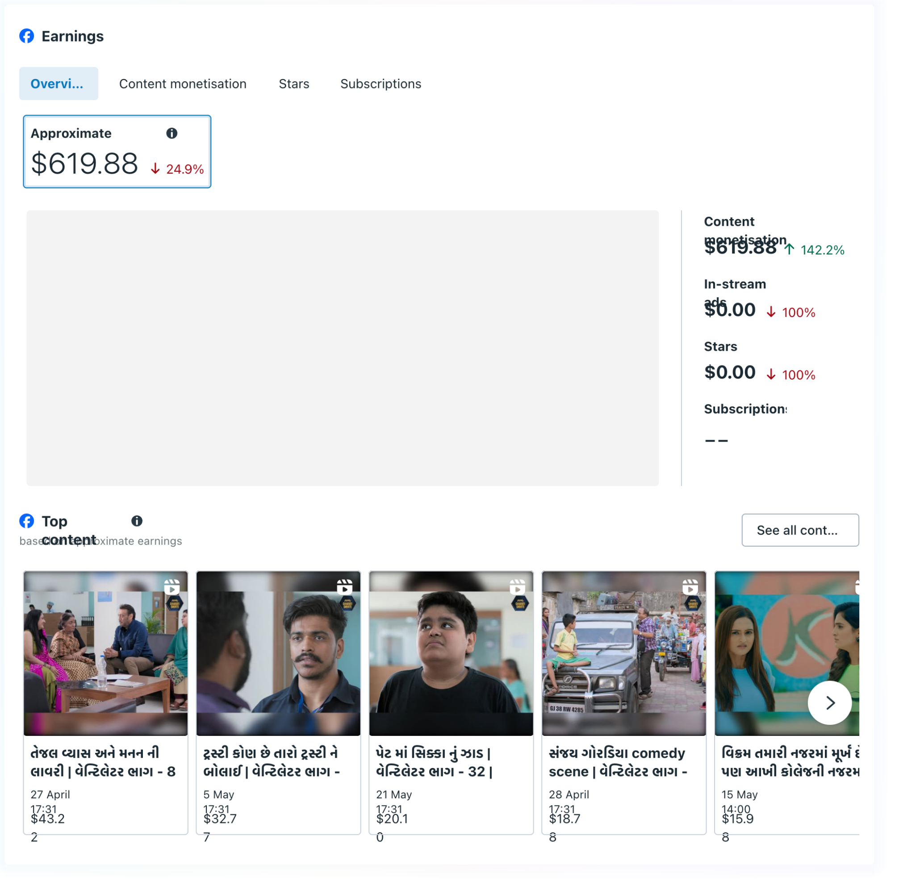

Case 04 · Gujarati multi-format distribution
One film, multiple release formats
How Gujarati film catalogue assets were distributed through full releases, serialised parts, Shorts, and Facebook cuts, while keeping pre-tenure performance separate.
Context
A film can have more than one useful release format
For Gujarati titles, the work covered full releases, serialised parts, Shorts, and Facebook cuts. Each format offered a different way for people to discover or continue watching a title.
Problem
A single upload does not use every available format
Publishing a film once limits the number of entry points into the catalogue. The decision was to use different formats where appropriate, while clearly separating views from fresh tenure releases and repackaged content from older titles.
Strategy
Match the format to the job
Full releases keep the complete film available; serialised parts create more individual viewing entry points; Shorts extract moments for discovery; Facebook cuts provide another distribution surface. These are distinct formats, so their view totals are reported separately before being combined.
Evidence
Rakhewal: one film, 163 YouTube pieces, 17.77M tenure views
| Format | Pieces | Views |
|---|---|---|
| Fresh full release | 1 | 6,556,372 |
| 14-part re-cut | 14 | 248,990 |
| Shorts | 148 | 10,967,825 |
| Total YouTube pieces (tenure strategy) | 163 | 17,773,187 |
Format mix inside the tenure run
Views by format within the 17.77M tenure window
Pre-2026 Rakhewal uploads (about 1.06M views) are excluded to keep this focused on tenure work.

Radha Tara: original vs serialised re-release
2023 lifetime vs July 2026 re-release
Views shown on the same scale, with the re-release as the 100% reference.
Original 2023 lifetime: 3,785,146 views. July 2026 re-release: 6,423,457 views across 15 parts, approximately 69% more than the original lifetime total.

Facebook recovery: publishing volume after restriction
The page was inactive for about ten months between 18 May 2025 and 25 March 2026. The 2025 period recorded 65 posts and 26,325,860 views; the 2026 period recorded 433 posts and 47,351,230 views. The higher posting volume and view totals are observed together, but this comparison alone does not prove posting volume caused the change.

Results
One title, multiple tracked distribution outputs
Rakhewal generated 17,773,187 views across 163 YouTube pieces during the tenure distribution run. Radha Tara’s July 2026 serialised re-release reached 6,423,457 views across 15 parts, compared with 3,785,146 lifetime views on the 2023 original. Facebook publishing resumed after a long restriction period; its before-and-after totals are reported as observed outcomes, not proof of causation.
Takeaway
Distribution is a packaging decision as well as a publishing decision
The work was not just to post more. It was to choose how a title could be broken into formats, publish those formats, and keep the evidence clear about original releases, repackaged content, and inherited views.